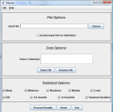

The Statsres Input Screen is split into three parts: File Options (which comma-separated values files to process), Data Options (which columns within those data files to process) and Statistical Options (which statistical measurements to calculate).
File Options - you can either type in a file name in the box beside input file or choose a file from the open file dialog box by clicking "Select" button beside the text box. The file chosen must be a comma-separated values file (with a .csv file extension). Alternatively, you can check the box "Include Input Files in Subfolders" and choose a folder rather than a specific file. All .csv files in that folder and any subfolders will be used as input provided they have the same column headings as all other files.
Data Options - the column headings represent the first line of the .csv file (first .csv file if folder option was used). You can either click on one or hold down the shift key on the keyboard and select multiple columns. Alternatively, use "Select All" to select all columns in that file (files if folder option selected).
Statistical Options - you can check as many statistical measurements as you wish. By default, all are selected. A good statistical textbook will explain these so details of each measurement are not included here.